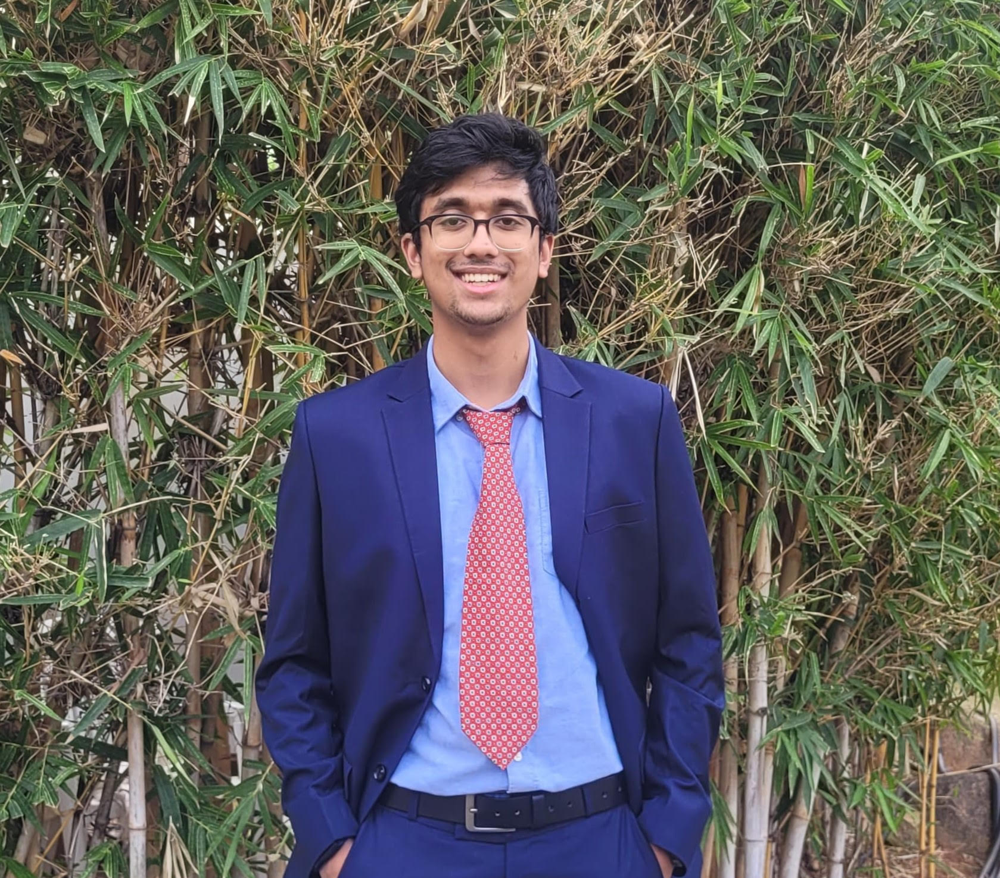

Welcome to my page!
I’m a project assistant at IISc Bangalore, working on sparse input 3D Gaussian Splatting.
I received my Bachelor's from BITS Pilani, Hyderabad, in August 2025.
I am broadly interested in image processing, robotic perception, and computer vision.
For the past year, I've been working on static novel view synthesis.